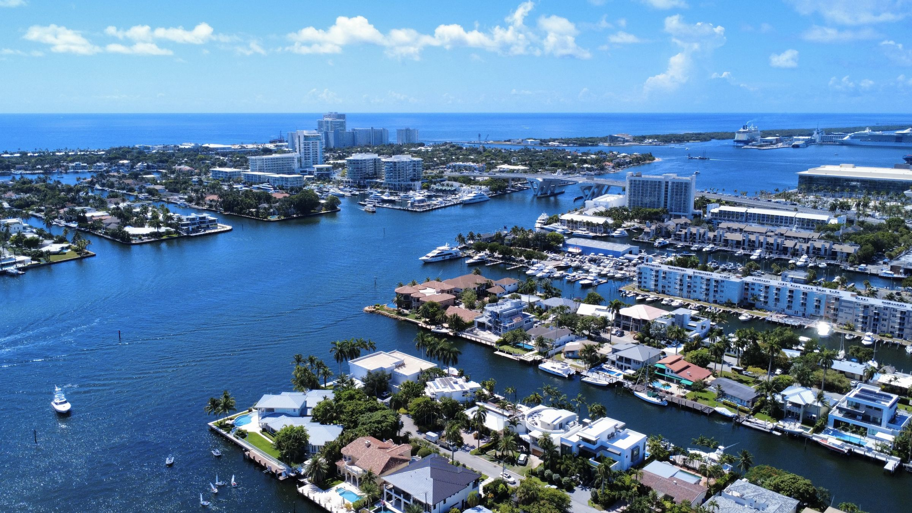
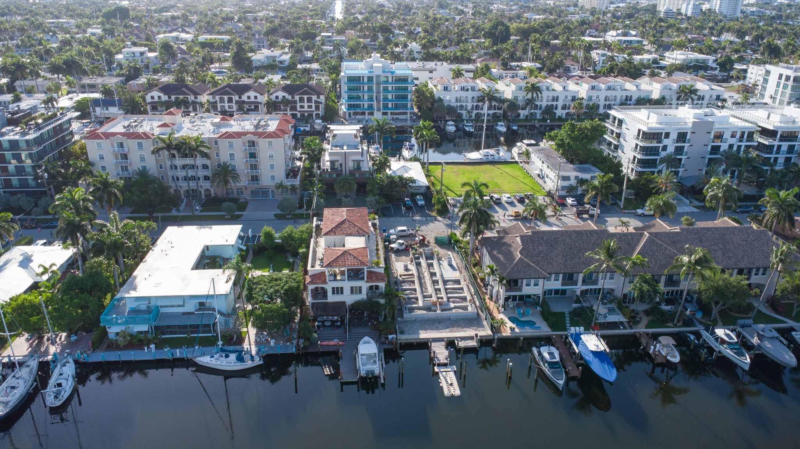
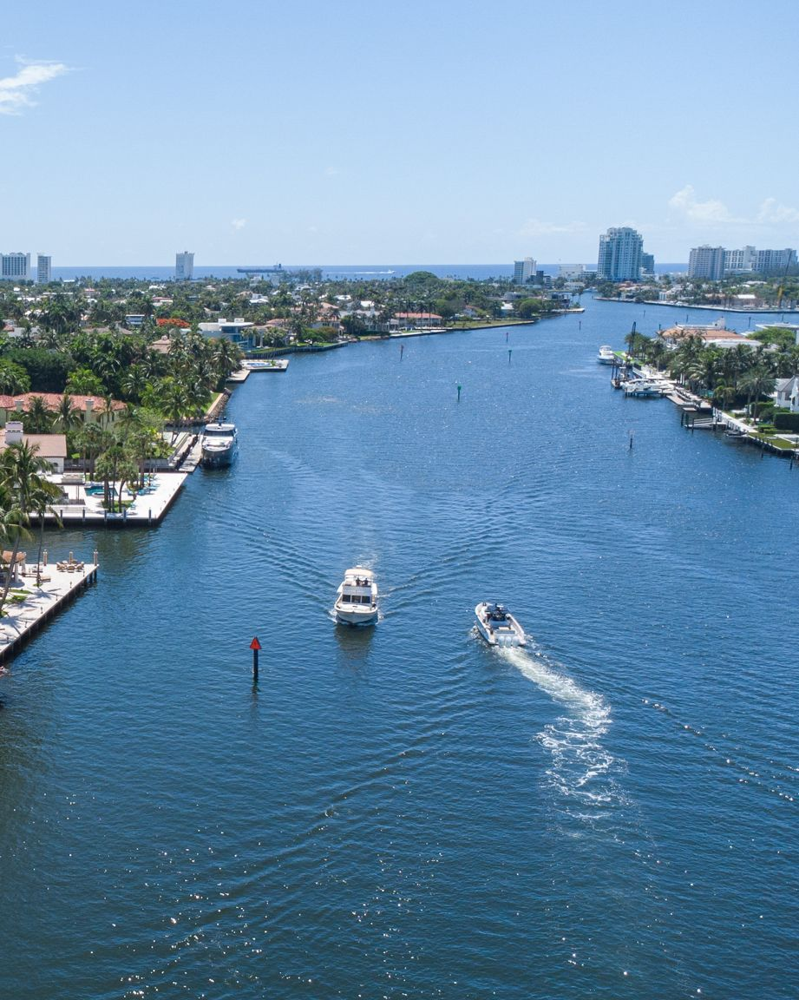
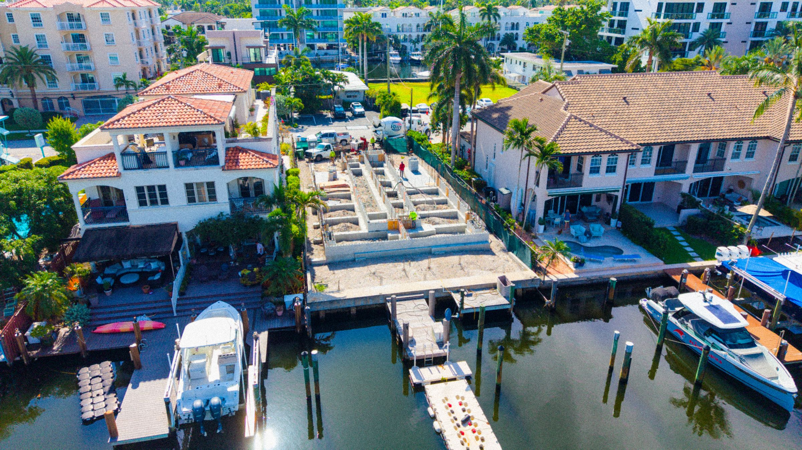

Buying on the Water
What to look for, why it matters and what to ask before you buy waterfront in Fort Lauderdale.
Why Waterfront Matters
Why the water drives value in Fort Lauderdale, and what changes from one canal to the next.

Depth at High Tide
What depth to check, where to measure it and why tide matters for your boat.

Canal Width & Distance
How canal width and the distance to open water affect turning, docking and travel time.
- 17th Street Causeway bridge: 55 ft closed
- New River rail bridge: 4 ft closed

Setbacks
How setbacks limit the house, the dock and the lift, and what to confirm before you plan.
- Dock reach: 25 ft or 25% of the waterway (ULDR §47-19.3)

Seawall Inspections
What a seawall inspection should cover and the warning signs to look for.
- Broward County: 4 ft NAVD88 minimum before 2035
- 5 ft by 2050
Questions to Ask
- Boat specs in writing
- Route map with every bridge
- Survey with seawall cap height
- Elevation certificate and flood zone
- Depth soundings at low water
- Marine contractor inspection
- Seawall, dock and lift permits
- Wind and flood insurance quotes
The questions Nick asks on every waterfront showing, in his words.
Sources
- 33 CFR Part 117, drawbridge operations
- New River drawbridge rule, Oct. 25, 2021
- Fort Lauderdale ULDR §47-19.3, docks
- Broward County Code, Ch. 39, Art. XXV, seawalls
- USCG Local Notice to Mariners
- FEMA Flood Map Service Center
This guide is general information, not legal advice. Every property needs its own survey, inspection and review, and codes and bridge operations change. Figures reviewed .